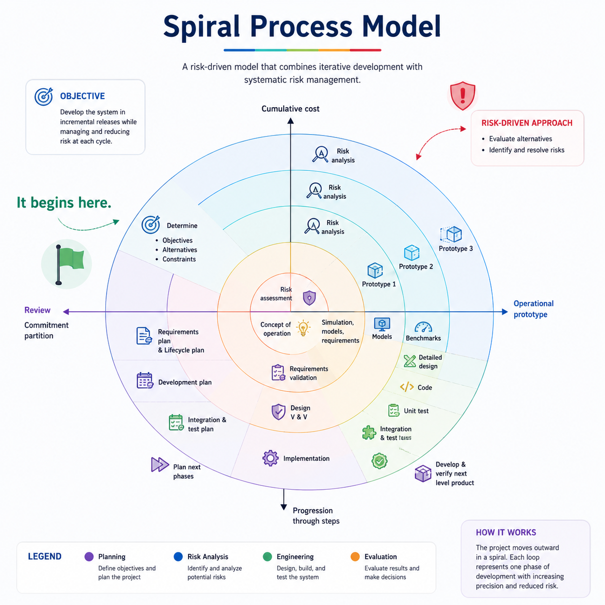

Spiral Model
Iteration is visible in the shape. Risk-driven commitment is the idea that defines the model.
Explain how each cycle establishes objectives, reduces key risks, develops and validates the next level, then reviews and plans before greater commitment.
Each loop buys knowledge before buying commitment

Read the logic, not only the spiral: objectives and alternatives → risk assessment/reduction → development/validation → review and next planning.
What are we trying to achieve and what alternatives exist?
What could fail, and what experiment or analysis reduces uncertainty?
Develop and validate the next product level.
Review evidence and decide the next cycle.
Medical AI decision support
The team wants an AI component but its accuracy on local patient data is uncertain. Before funding full integration, it isolates that technical risk, builds a limited prototype, evaluates error patterns with clinicians, compares alternatives, and only then decides whether to scale the investment.
Risk first, commitment second. Iteration alone does not make a process Spiral.
The section below is added clarification.
Why Spiral matters
Large, complex or high-consequence projects where technical, cost, safety or requirements uncertainty makes explicit risk reduction valuable.
The model was highly influential in introducing risk-driven thinking, even though projects do not always use its published form literally.